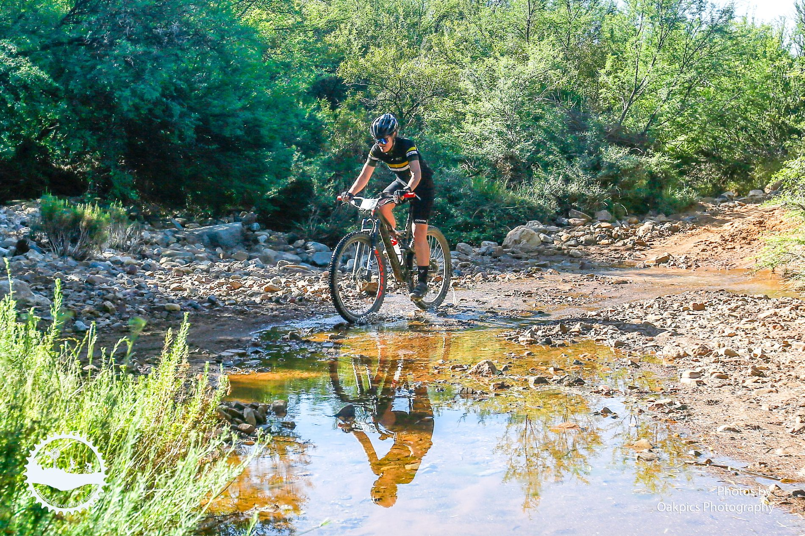
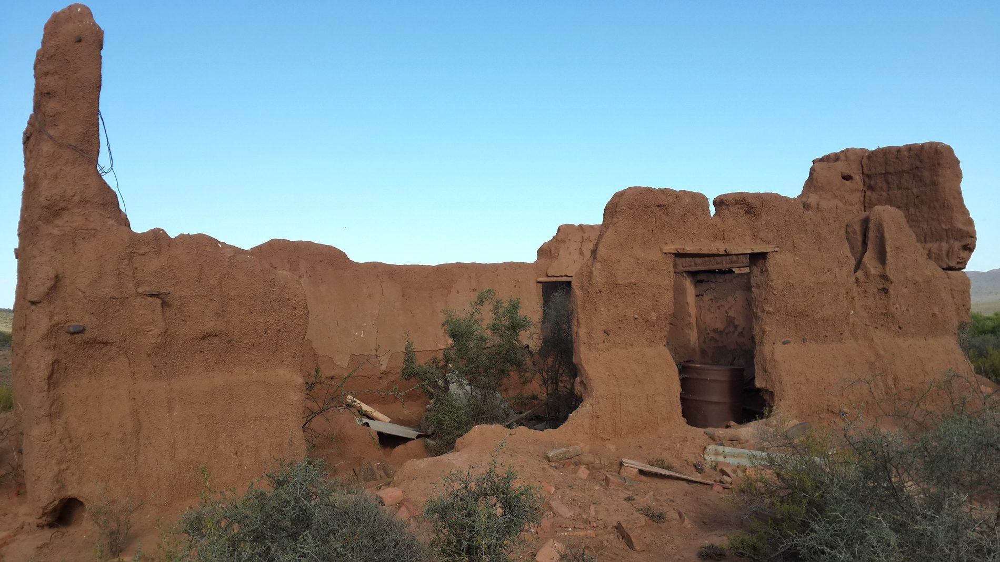
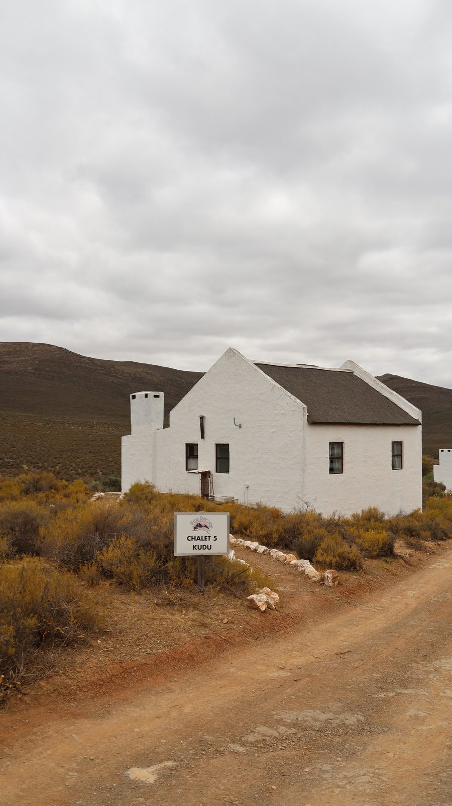
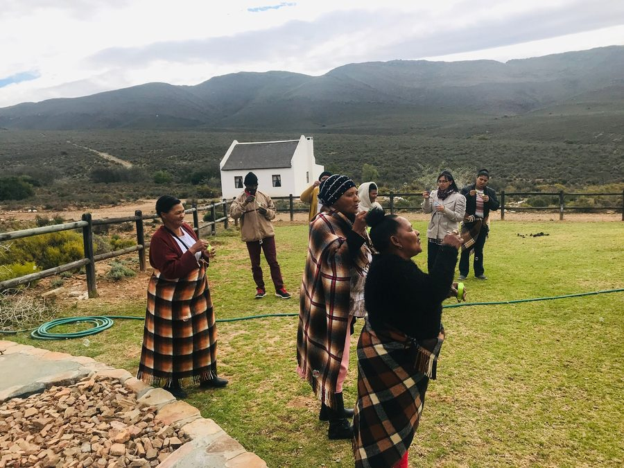

Activities
Activities
Game drives, hiking, mountain biking, biodiversity, putt-putt and relaxing by the pool.
Game drives, hiking, mountain biking, biodiversity, putt-putt and relaxing by the pool.
Morning and sunset drives to explore the far reaches of the reserve.
Explore
Marked trails from short strolls to all-day mountain hikes.
Explore
Endless jeep tracks, scenic views and safe cycling on the reserve.
Explore
A critical biodiversity area in the Little Karoo and Cape Floral Kingdom.
Explore
Enjoy the views from your veranda or relax by the pool.
Explore
Golfing made fun for the whole family.
Explore
Montagu's cultural background and love for heritage values offer you a chance to travel back in time. The relaxed atmosphere, clean air and friendly town folk are exactly why you are here.
Things to do in Montagu